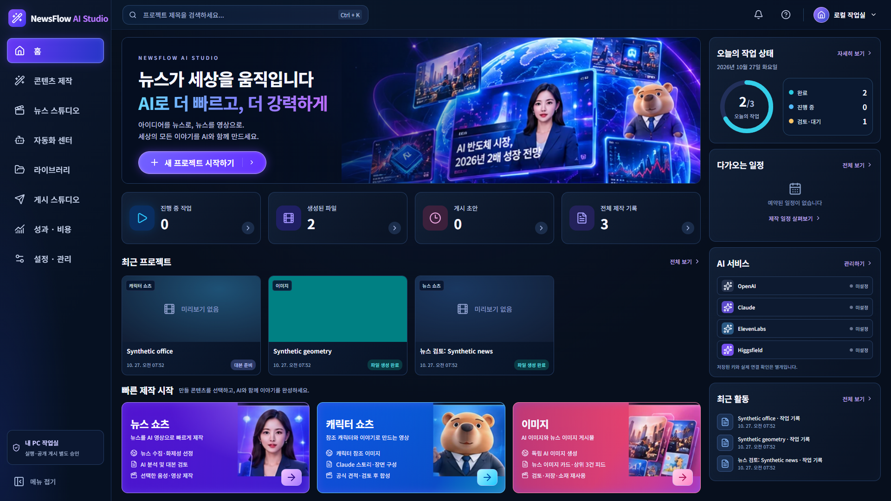
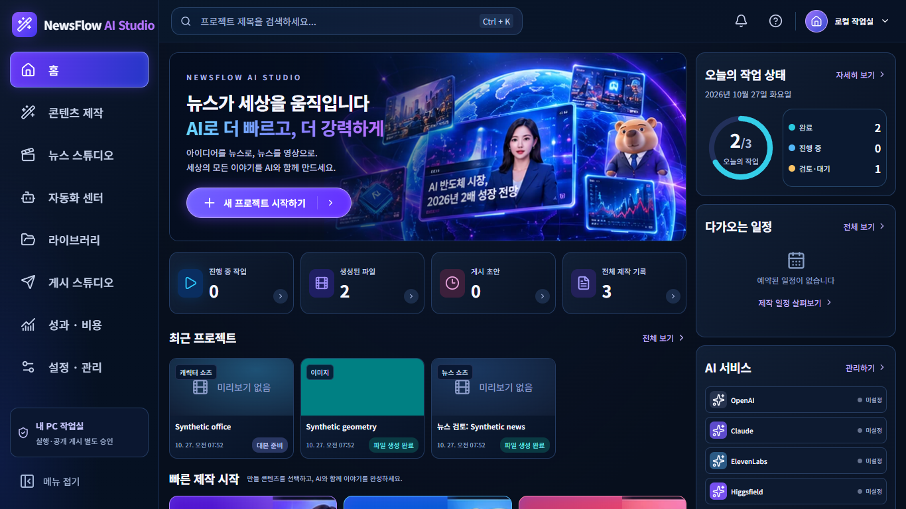
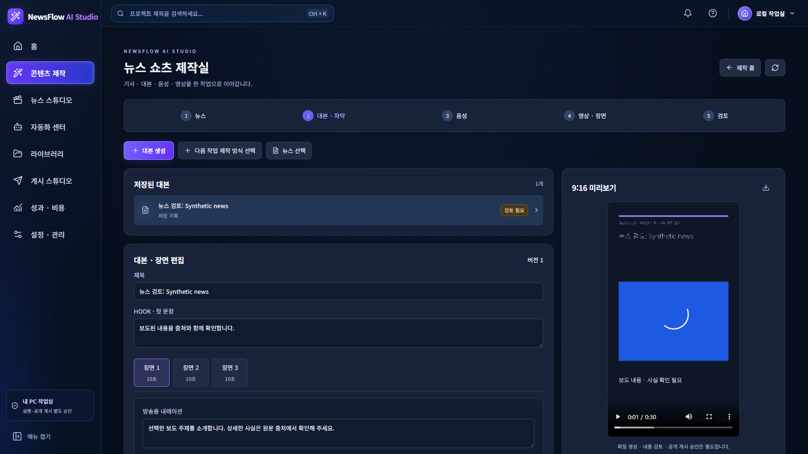
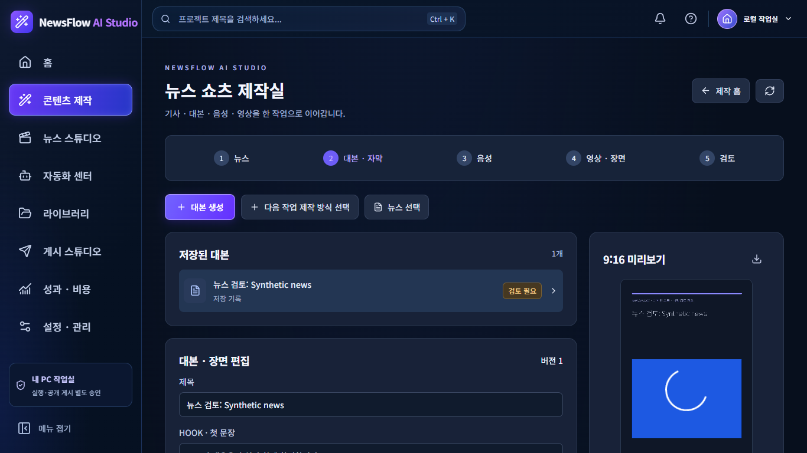
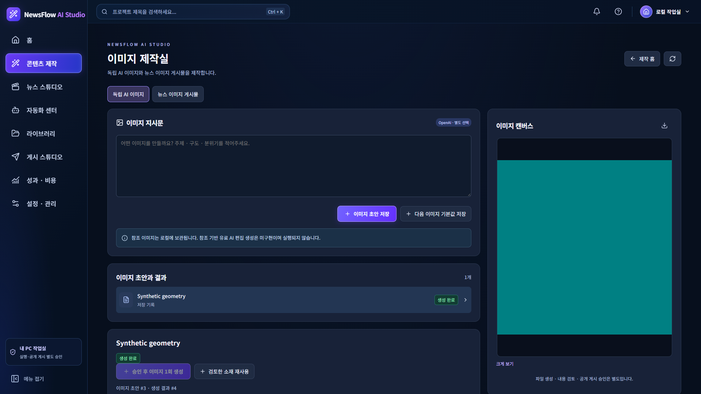
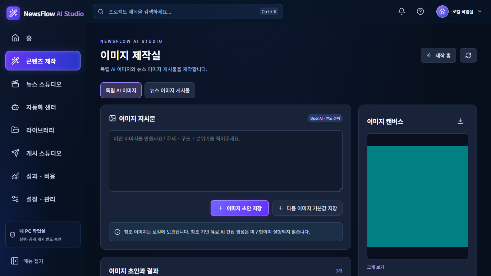
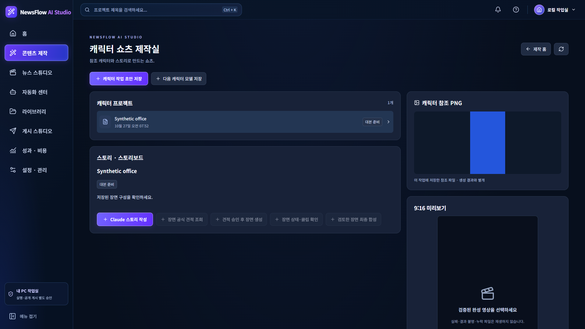
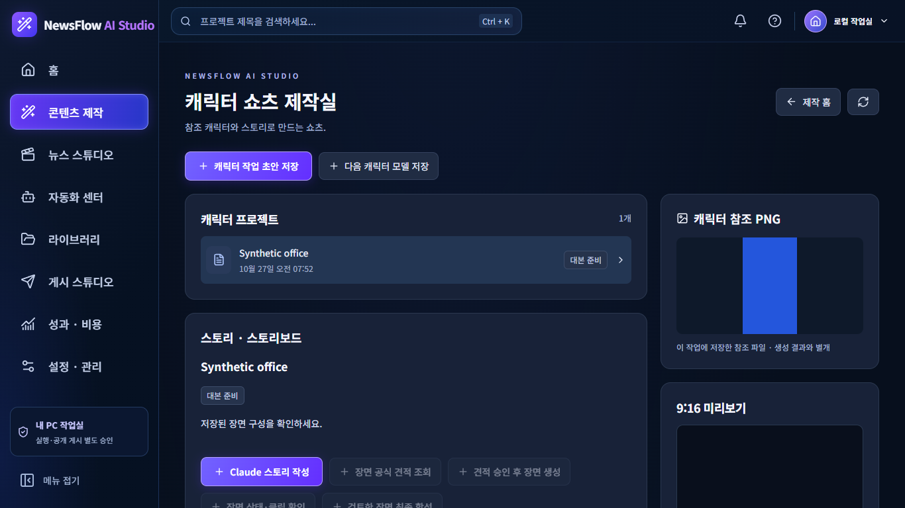
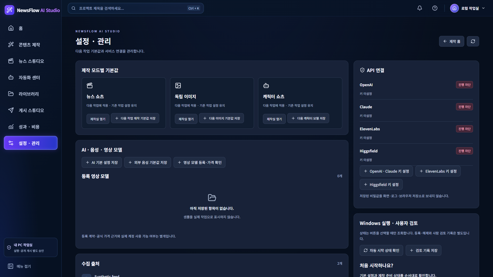
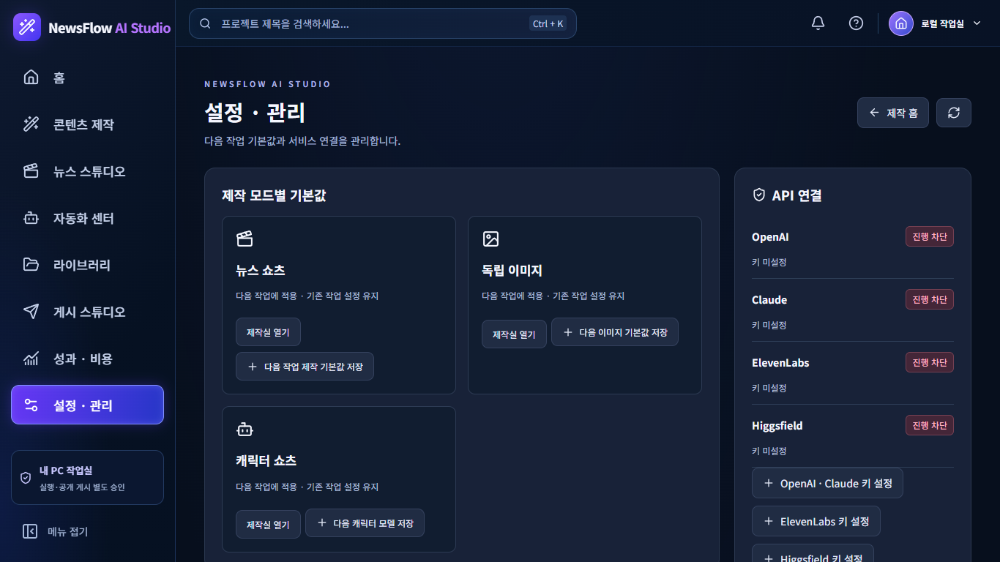

새 EXE 실제 GUI: 13 PASS / 1 FAIL. 캐릭터 기본값 선택칸의 복원 표시 결함을 보존했습니다. 합성 데이터만 사용했고 실제 공급사 호출·운영 재시작은 없습니다.
전체 한국어 보고 · GUI 검사 · 엔진 · 재시작 설정 보존 · 운영 보존
| 항목 | 판정 | 실패 근거 |
|---|---|---|
| React EXE routes and static assets | PASS | |
| Actual React menu and creation-home navigation | PASS | |
| News real FFmpeg MP4 playback | PASS | |
| Image real Fake output preview and download | PASS | |
| Image model size quality save restore | PASS | |
| Reviewed image reuse to character source | PASS | |
| Character saved reference, Seedance contract and job snapshot | PASS | |
| Character defaults dialog restores stored selection | FAIL | Expected values to be strictly equal: + actual - expected + '' - 'claude-sonnet-4-6' |
| News script provider model save restore | PASS | |
| ElevenLabs model save without voice lookup or generation | PASS | |
| Higgsfield provider choices and confirmed model boundary | PASS | |
| Provider-specific empty key forms | PASS | |
| Actual synthetic EXE authentication and missing media refusal | PASS | |
| No React exceptions or requested external URLs | PASS |










NewsFlow AI — 최신 React UX/UI Windows EXE 통합 검증 2026-10-27 / 최종 판정: CONDITIONAL 1. 검증 대상과 변경 범위 - 개발 브랜치: codex/newsflow-studio-v3-20261026. - 제품 검증 코드: 317504152877139737991a737f56f5b97b9dea24. - 빌드 체크아웃 HEAD: 220e196f50da5855bbdda7bb651a17d6bb1b4a54. - 제품 소스·migration·Guard·CSP 변경 0. 검증 스크립트 1개와 이 보고·합성 캡처만 추가. - 기존 4개 작업본 파일은 줄바꿈 차이만 있음을 확인. 덮어쓰기·스테이징하지 않음. - PR #35는 open / Draft / 미병합. PR의 원래 head는 codex/newsflow-ux-video-app / 6aef983이며 React 브랜치와 구분함. PR 변경·새 PR·main 병합 없음. 2. 새 기술 EXE - PyInstaller 6.22.3 / Windows Python 3.14.7 / 기존 onedir 기술 빌드 설정 재사용. - 파일: NewsFlowAI-Technical.exe. 로컬 절대 경로는 별도 로컬 artifact-location-private.txt와 사용자 응답 링크로 제공. - SHA-256: 9491df21d5fae4edf693ac02ed70249657404aa809ebf4aff0d4544f9e5ac1b4. - EXE와 _internal이 함께 필요한 기술 산출물이며 설치 프로그램·일반 사용자 배포물이 아님. - 최초 빌드 명령은 FFmpeg 입력 위치가 운영 백업 영역으로 해석되어 자동 승인 심사에서 거절됨. 명령은 실행되지 않음. 해당 위치를 사용하지 않고 별도 도구 설치본의 FFmpeg·ffprobe 해시를 검증한 뒤 승인된 빌드 수행. - 빌드 exit 0. 번들 React 파일 17개가 최신 frontend/dist와 해시 일치. 운영 DB·DPAPI 파일·사용자 MP4는 번들에 없음. - 자식 EXE 환경의 PATH에는 System32만 포함. Python 개발환경을 PATH에서 찾지 않고 실행. Python 미설치 새 PC 검증은 NOT VERIFIED. 3. 실제 EXE React 검증: 13 PASS / 1 FAIL / 0 ERROR - Mock HTML 서버가 아닌 새 EXE가 실제 Python 앱과 React 자산을 18765에서 제공. 합성 프로필만 사용. - 홈·뉴스 쇼츠·이미지·캐릭터·설정 화면을 1920×1080 및 1366×768에서 캡처. 메뉴와 콘텐츠 제작 홈의 3개 제작 경로 확인. - React pageerror 0, JS/CSS/폰트 등 정적 자산 HTTP 오류 0. 실제 로컬 JSON API와 기존 폼 저장 경로 사용. GET 응답을 화면 목업으로 대체하지 않음. - 뉴스: Claude Provider·claude-sonnet-4-6 저장·재조회·창 재열기 통과. 기존 대본 불변. - 음성: ElevenLabs 모델 선택·저장 통과. enabled=false 유지, 목록 조회·음성 생성 0. 실제 음성 ID는 입력하지 않음. - 영상: 기본 FFmpeg/off와 Higgsfield 선택 경로 확인. 합성 프로필의 공식 확인 영상 모델은 0개. 미확인 모델을 임의 등록하거나 가짜 가격을 넣지 않음. 실제 뉴스 Higgsfield 모델 선택·계정 사용 가능 여부는 NOT VERIFIED. - 이미지: OpenAI 모델·864×1536·low 저장·복원, 기존 1024×1024 생성 결과 유지, 캐릭터 기본값 영향 없음. - 이미지 다운로드 HTTP 200·파일 수신 확인. 검토 체크 후 캐릭터 참조 소재로 재사용 통과. - 캐릭터: 저장된 참조 PNG 로딩, Seedance 계약, 기본 대본 모델 저장, 기존 작업의 claude-opus-4-6 고정값 보존 통과. - 공급사별 OpenAI·Claude / ElevenLabs / Higgsfield 버튼이 각각 원래 키 설정 폼을 열고 비밀 입력칸은 비어 있음. Claude Provider 선택 가능. 실제 키 입력·저장·복호화 없음. - CSRF 없는 저장 403, 존재하지 않는 이미지 404 확인. CSP·Guard 변경 없이 검증. 4. 확인된 제품 결함 1건: 캐릭터 기본값 복원 표시 - 재현: 다음 캐릭터 모델 저장에서 대본·Seedance 모델을 직접 선택·저장 → 페이지 재로딩 → 같은 창 재열기. - 실제 저장소는 선택값을 유지하지만 창의 선택칸은 공백. 기존 작업의 모델을 바꾸거나 저장 데이터를 유실한 것은 아님. - CommandDialog 초기값은 character_create에만 characterDefaults를 주입함. character_character_defaults에는 기본값 주입이 없고 해당 formDefaults도 없음. - CommandDialog 소스는 3175041과 동일. 기존 집중 CI에 이 실제 브라우저 복원 단언이 없었으므로 새로 발견된 기존 결함으로 분류. EXE 도입으로 생긴 신규 회귀라고 단정하지 않음. - 이번 범위는 통합 검증이므로 제품 코드는 수정하지 않았고 실패를 유지. skip·xfail·단언 삭제 없음. - 최소 후속 수정: 해당 기본값 저장 창에도 characterDefaults를 초기화하되, 현재 작업의 고정값을 덮어쓰지 않음. 대본·영상 모델 양쪽 재열기, 기존 작업 불변, 모드 간 독립성을 집중 검증한 뒤 EXE 재빌드 필요. 5. 합성 엔진·미디어 - 기존 기술 Probe를 새 EXE에서 실행: PASS. Fake RSS → 로컬 분석·대본 → FakeTTS → FFmpeg 뉴스 MP4 1080×1920·30초. 기사 이미지 자동 연결 통과. - 독립 이미지: Fake Adapter 생성 1회, 검토 후 소재 저장 통과. UI는 이 실제 합성 파일을 표시·다운로드·재사용. - 캐릭터: 테스트 패턴 클립을 사용한 기존 FFmpeg 합성 1080×1920·30초. 유료 Claude 스토리·Seedance 클립 생성 성공을 의미하지 않음. - 실제 EXE React 플레이어에서 뉴스 MP4 규격·길이 확인 및 currentTime 진행 확인. 캐릭터 유료 생성 작업의 최종 미리보기는 NOT VERIFIED이며 참조 PNG와 별도로 취급. - 실제 OpenAI·Claude·ElevenLabs·Higgsfield 호출, OAuth·SNS 로그인·갱신·게시 0. 6. 정상 종료·재실행·설정 보존 - CTRL_BREAK 후 15초 이내 server_stop 기록, 정상 exit 0, 포트 해제. 중복 실행은 명시적 포트/인스턴스 충돌 거부. - 동일 합성 프로필로 2회 정상 시작·종료. 추가 복원 검사에서 대본·음성·이미지·캐릭터 기본값과 기존 캐릭터 작업의 selection 5개 그룹이 프로세스 재시작 전후 완전히 일치. - UI 검증 전체 종료코드 1은 위 캐릭터 표시 실패를 그대로 전달한 값. EXE 정상 종료 실패로 해석하지 않음. - Windows Job의 EXE 자식 active=0, 마지막 테스트 포트 18765 리스너 0, 해당 테스트 Chrome·Node·EXE 잔존 프로세스 0. - 첫 Chrome 시도에서 임시 AppData 구성 차이로 연결 오류 발생. 기존 검증된 사용자 홈/AppData 구조로 테스트 도구만 정합화한 뒤 연결 성공. - 초기 검증 스크립트의 접힌 옵션·버튼 보조문구·비동기 대기 오류는 도구 결함으로 분리하고 수정. 최종 실제 제품 실패는 1건만 집계. 중간 기록은 로컬에 보존. 7. 기존 및 신규 검증의 구분 - 이번 새 Windows 실행 증거: React 집중 13 PASS / 1 FAIL / 0 ERROR, 엔진 Probe PASS, 정상 종료·재시작 및 5개 설정 그룹 보존 PASS. - 기존 Windows Actions 40411887006 / 3175041: React 타입 검사·빌드 PASS, readmodel/resources 30 PASS + 원래 폼 연동 12 PASS =42 PASS 재사용. - 제품 변경이 없으므로 이번에 전체 회귀·동일 CI를 재실행하지 않음. 기존 5,454 PASS / 4 SKIP은 과거 증거이며 최신 EXE의 전체 회귀 결과로 표시하지 않음. - 과거 Windows CI PowerShell identity 시간 초과 1건은 별도 잔여 위험 유지. 관련 변경이 없어 재실행하지 않음. - 신규 skip/xfail 0, 기존 테스트 ID 삭제 0. 실제 Windows OS DPI 100/125/150% 및 새 PC 무Python 설치는 NOT VERIFIED. 8. 보안 및 운영 보존 - 기존 기술 Guard를 EXE의 정해진 진입 순서로 사용. 사전 import·정책 우회·전역 완화 없음. - Guard 음성/미디어 경계 검사: 외부 읽기, 번들 쓰기, shell, media traversal, 부적절한 filter, 외부 socket 연결 모두 거부. - Playwright는 localhost 외 요청을 차단하고 Node 경계·Chrome 임시 프로필·프록시/이름 해석 제한 유지. 관찰한 페이지의 외부 요청 0. Chrome 자체의 모든 백그라운드 통신을 OS 수준에서 차단했다고 주장하지 않음. - 운영 원본을 테스트 입력으로 사용하지 않음. 운영 보존 검사는 별도 읽기 전용 해시 비교만 수행. - 운영 적용본 08bfec1 기준 소스 173개, 암호문 6개, 미디어 12개 해시 불일치 0. 운영 DB 파일도 보존 기준 해시 일치. DB 내 ledger·승인·결과 불명 기록을 변경하는 작업 없음. - 운영 8765는 기존 PID 55740 유지. 운영 HTTP 요청·종료·재시작·migration·키 사용 0. 백업 A/B 쓰기·삭제 0. 원본의 관련 자료를 개발/EXE에 복사하지 않음. 9. 실제 API 및 운영 적용 조건 - API 키 화면 연결과 실제 계정 인증 성공은 별개. 실제 계정 권한·잔액·단가·청구액은 이번에 조회하지 않음. - OpenAI/Claude: 별도 테스트 키, 선택 모델·전송할 합성 프롬프트, 호출 횟수·비용/가격 조건과 결과 불명 중단 정책을 승인받아야 실제 호출 가능. - ElevenLabs: 별도 테스트 키·음성 ID·모델·대본·호출 횟수/사용량 승인 필요. 외부 음성 승인은 분석 API 승인과 별개. - Higgsfield/Seedance: 공식 모델 경로·입력 계약·공식 견적·참조 PNG 전송·장면 수를 확인하고 별도 생성 승인 필요. 뉴스 합성 프로필에 확인 모델이 없으며 실제 지원을 주장하지 않음. - Instagram/YouTube/TikTok: 계정·권한·OAuth/토큰 갱신·업로드/공개 게시를 각각 별도 승인. 이번에는 수행하지 않음. - 최신 운영 적용 전에는 위 캐릭터 기본값 표시 결함의 처리 판정과 수정본 EXE 집중 검증, 사용자 별도 운영 적용·재시작 승인이 필요. - 일반 배포 전 코드 서명·라이선스·설치/업데이트/제거·사용자별 DPAPI/데이터·포트/다중 실행·Python 없는 새 PC 검증 필요. 이번 EXE는 이를 통과한 설치파일이 아님. 10. 전체 Step 1~18 현황 (이번 실행과 과거 증거를 구분) 1 기존 운영 조사: 기존 증거 보존 / 이번 재실행 안 함 2 로컬 변경 분류: 기존 증거 보존 3 Cloud/PC 격리 비교: 기존 승인 보존 4 통합 인수 기준: 기존 승인 보존 5 백업 범위·공간 계획: 기존 승인 보존 6 정상 종료·전체 백업: 기존 승인 보존 / 이번 A/B 변경 0 7 백업 A/B 해시 확인: 기존 증거 재사용 8 격리 복원·SQLite: 기존 PASS 증거 재사용 9 통합 후보·준비: 기존 승인 보존 10 Git 진단: ACCEPTED / longpaths 명령 한정, 복구 불필요 11 Git 복구: SKIPPED / 미실행 12 통합 복원: PASS(기존), IMG CONDITIONAL 이후 후속 증거 보존 13 A~K/Fix: 기존 단계 승인 보존, 13H/I/J/K CONDITIONAL, 13K-Fix ACCEPTED. 이번 React EXE: CONDITIONAL(표시 결함 1건) 14 기존 08bfec1 운영 적용 상태만 조회. 최신 React 운영 적용·재시작 NOT AUTHORIZED / 미실행 15-A 기술 EXE: 기존 CONDITIONAL, 최신 React 기술 EXE도 CONDITIONAL. 15-B 기존 결과 보존 / 이번 Demo 작업 없음 16 다수 사용자 설치·분리: NOT AUTHORIZED / 미실행 17 업데이트·제거·복구: NOT AUTHORIZED / 미실행 18 일반 사용자 배포: NOT AUTHORIZED / 미실행 최종: BUILD PASS / ENGINE PASS / REACT FUNCTION CONDITIONAL / SECURITY CONDITIONAL / WINDOWS CONDITIONAL. 실제 운영 전환·공개 배포·유료 API 성공으로 해석하지 않습니다. 검증과 보고 후 추가 개발 없이 중단합니다.